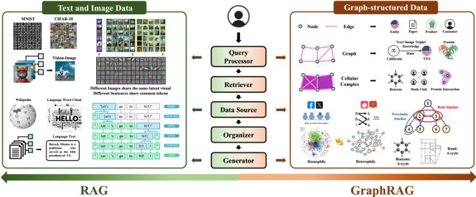
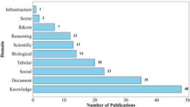
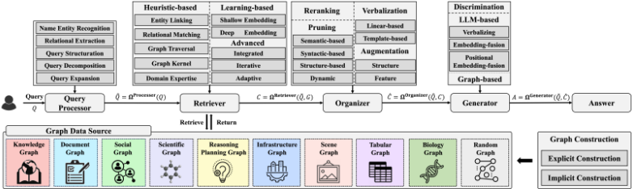
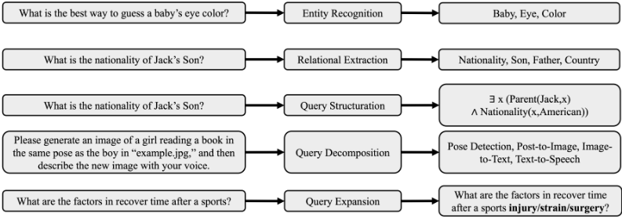
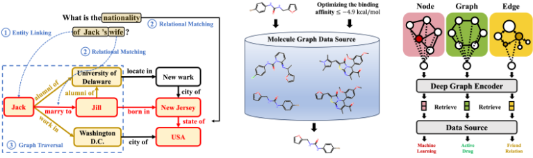

基于图的检索增强生成综述
该综述系统梳理了将图结构数据引入 RAG 的 GraphRAG 技术版图。针对图数据蕴含的关系信息无法被传统基于语义相似度检索的 RAG 有效利用、且相关研究碎片化的问题，论文提出包含 query processor、retriever、organizer、generator 与 data source 五组件的整体框架，并按知识图谱、文档图、科学图、社交图、规划/推理图、表格图等领域分别综述图构建、检索、组织与生成的专属设计。核心结论是：GraphRAG 需针对领域关系模式定制设计，简单将子图文本化会丢失关键结构信息；当前研究集中于知识与文档图，系统评测与知识冲突处理仍是开放问题。对团队而言，它是 RAG 与上下文工程方向的一份系统性技术地图与选型参考。
GraphRAG 研究现状碎片化，不同工作在概念、技术与数据集上差异显著；现有综述多聚焦 i.i.d. 数据上的通用 RAG，缺乏对图结构数据的系统梳理；且当前研究集中于知识与文档图，忽视基础设施图等其他领域，存在 'bubble effect'。同时图数据的多样格式与领域特定关系知识给 retriever、generator 等组件设计带来独特挑战。
提出 GraphRAG 整体框架并分组件综述代表性技术：query processor（NER、关系抽取、查询结构化/分解/扩展）、retriever（启发式方法如实体链接、关系匹配、BFS/DFS 图遍历、graph kernel；学习式方法如 shallow embedding 与 GNN；以及 integrated/iterative/adaptive 等高级检索策略）、organizer（图剪枝、重排、图增强、verbalization）、generator（判别式、LLM-based、图生成式）与图数据源构建；随后按知识图谱、文档图、科学图、社交图、规划/推理图、表格图等领域分门别类综述任务应用、图构建方法与各组件的领域专属设计，并汇总基准数据集与工具资源。
未在论文中说明
与已有工作的区别：此前综述多聚焦 i.i.d. 数据上的通用 RAG，唯一一篇图 RAG 相关综述仅在传统 RAG 架构下综述技术、未按领域专门化。本综述首次从全局视角提出五组件整体框架，并从局部视角按领域专门化综述'何时检索（任务应用）、检索什么（图构建与关系原理）、如何检索（技术设计）'，覆盖知识、文档、科学、社交、规划/推理、表格等更广的图领域。
相关度级别：high
命中能力域：3.1 上下文工程与记忆 | 3.3 Agent 架构与工具使用 | 3.5 评测与可靠使用
理由：GraphRAG 直接命中团队核心能力域 3.1：论文系统覆盖 RAG/检索增强、结构化上下文组织（图剪枝、重排、verbalization 决定什么内容以何种形式进入 prompt）与长上下文压力下的检索策略，正是团队知识库问答与文档提效场景的技术主线。其规划/推理图部分综述了 API 工具依赖图建模与 StructGPT 等迭代接口调用方法，与 3.3 的工具调用与规划直接相关；第 10.6 节对 GraphRAG 分组件评测的讨论及各领域基准数据集汇总对应 3.5。作为综述它不提供单一可落地算法，但为团队在 RAG 演进方向（图结构上下文）上提供了系统性的选型与设计参考。
建议动作：深入精读并做内部分享
arXiv:2501.00309v2 [cs.IR] 2025年1月8日
检索增强生成（Retrieval-Augmented Generation, RAG）是一种强大的技术，它通过从外部来源检索额外信息（如知识、技能和工具）来增强下游任务的执行。图（Graph）凭借其内在的“由边连接节点”特性，编码了海量的异构信息和关系信息，使其成为 RAG 在众多现实世界应用中的宝贵资源。因此，我们最近见证了将图融入 RAG（即 GraphRAG）所获得的日益增长的关注。然而，与传统 RAG 不同——在传统 RAG 中，检索器、生成器和外部数据源可以在神经嵌入空间中统一设计——图结构数据的独特性（例如格式多样且领域特定的关系知识）在为不同领域设计 GraphRAG 时带来了独特而重大的挑战。鉴于 GraphRAG 的广泛适用性、相关的设计挑战以及近期的迅猛发展，迫切需要对其关键概念和技术进行系统性且最新的综述。基于这一动机，我们对 GraphRAG 进行了全面且最新的综述。我们的综述首先通过定义 GraphRAG 的关键组件（包括查询处理器、检索器、组织器、生成器和数据源）提出了一个整体性的 GraphRAG 框架。此外，我们认识到不同领域的图呈现出不同的关系模式，需要专门的设计，因此我们回顾了针对每个领域量身定制的 GraphRAG 技术。最后，我们讨论了研究挑战，并集思广益提出未来方向，以激发跨学科的研究机遇。我们的综述仓库在 https://github.com/Graph-RAG/GraphRAG/ 上公开维护。
检索增强生成（Retrieval-Augmented Generation, RAG）作为一种通过从外部数据源检索额外信息来改进下游任务的强大技术，已被成功应用于各种现实世界的应用中 [87, 120, 514, 551]。在 RAG 框架中，检索器根据用户定义的查询或任务指令搜索额外的知识、技能和工具。检索到的内容随后由组织器进行精炼，并与原始查询或指令无缝集成，再进一步输入生成器以产生最终答案。例如，在执行问答（question-answering, QA）任务时，经典的"Retriever-then-Reader"框架 [191, 196, 468, 562] 检索外部事实知识以提高答案的忠实性，这显著促进了社会福祉，并降低了高风险场景（如医疗、法律、金融和教育咨询 [467, 472, 515]）中的风险。此外，大语言模型（Large Language Models, LLMs）的最新进展进一步凸显了 RAG 在增强 LLM 社会责任方面的力量，例如缓解幻觉 [397]、增强可解释性与透明度 [203]、实现动态适应性 [360, 419]、降低隐私风险 [512, 513]、确保可靠/稳健的响应 [105, 460]，以及促进公平对待 [362]。
∗ 同等贡献。
预印本。审稿中。
在检索增强生成（Retrieval-Augmented Generation, RAG）取得前所未有的成功的基础上，并进一步考虑到图在现实世界应用中的普遍存在 [545]，近期研究探索了将 RAG 与图结构数据相集成。与文本或视觉数据不同，图结构数据通过其内在的“由边连接的节点”这一特性来编码异构信息和关系信息。例如，社交网络中通过社会关系连接起来的个体通常表现出同质性（homophily）行为 [291]，计划中的顺序决策步骤遵循因果依赖 [454]，而分子中属于同一官能团的原子则具有独特的结构特性 [103, 508]。设计能够利用关系信息的 RAG 需要对其核心组件（例如检索器和生成器）进行适配，以无缝集成图结构数据，由此形成了 GraphRAG。与主要使用语义/词汇相似度搜索的 RAG [104, 120] 不同，GraphRAG 通过利用基于图的机器学习（例如图神经网络（GNNs））以及图/网络分析技术（例如图遍历搜索（Graph Traversal Search）和社区检测（Community Detection）[98, 428]），在捕获关系知识方面具有独特优势。例如，对于查询“哪些药物可用于治疗上皮样肉瘤，同时还会影响 EZH2 基因产物？” [452]，盲目地执行现有的 BM25 或仅依赖语义/词汇相似度的基于嵌入的搜索，会忽略编码在图结构中的关系知识。相比之下，一些 GraphRAG 方法沿着关系路径 "Disease (Epithelioid Sarcoma) → [indication] → Drug ← [target] ← Gene/Protein (EZH2 gene product)" 遍历图，沿关系 [indication] 检索上皮样肉瘤的邻居，沿关系 [target] 检索基因 EZH2 的邻居，并找到二者相交的药物 [186, 271, 428]。此外，一些领域所涉及的实体具有极其复杂的几何结构，需要专门的模型设计来加以刻画。例如，分子图中的三维（3D）结构 [52, 445]，以及产品分类体系（例如 Amazon 上的 [529]）、文档章节（例如使用 Adobe Acrobat 时的 [537]）和社交网络（例如 Snap 中的 [277]）中常见的层次树结构，都需要精心设计且具有适当表达能力的图编码器（或更准确地说，几何编码器）来捕获结构上的细微差异 [277, 527]。仅仅将节点文本转化为文字并输入大语言模型（LLM），无法表达复杂的几何信息；而且随着邻域层数的扩展，文本描述呈指数级增长，这种方式也变得不可行。
尽管 GraphRAG 相比 RAG 具有上述优势，但由于图结构数据的以下差异，设计合适的 GraphRAG 面临着前所未有的挑战：
star Methane, and 3-star T-junction vs. 4-square road, is essential in drug design for disease treatment [139] and road construction for city planning [209]. Beyond the retriever, the generator also requires specialized designs. When retrieved content includes complex graph structures with textual attributes, simply verbalizing the text of the subgraph and concatenating it into a prompt may obscure critical structural information. In these cases, encoding the graph with graph encoders such as GNNs before integrating it into generation can help preserve structural nuances [134, 244, 434, 443, 456].
Despite the above differences that have driven extensive research in GraphRAG, the current research landscape in this field remains fragmented, with significant variation in concepts, techniques, and datasets across studies. Moreover, current GraphRAG research primarily focuses on knowledge and document graphs as surveyed in Figure 2, often overlooking broader applications in other domains like infrastructure graphs. This imbalance not only hampers the advancement of GraphRAG but also risks creating a "bubble effect" that restricts the scope of future exploration. To address these challenges, we present a comprehensive and up-to-date review of GraphRAG, aiming to unify the GraphRAG framework from the global perspective while also specializing its unique design for each domain from the local perspective. The key contributions of this survey are as follows:
3

infrastructure graph , biological graph , scene graph , and random graph . For each domain, we review their unique applications and specific graph construction methods. We then summarize the distinctive designs of each component within our proposed holistic GraphRAG framework and collect rich benchmark datasets and tool resources.
In the following, we highlight the differences between our survey and existing surveys. Despite the urgent need for a systematic overview of GraphRAG, most existing surveys focus on general RAG within the context of i.i.d. data [11, 120, 227, 551, 561]. Before the advent of LLMs, earlier surveys focused on textual RAGs [11, 227]. With the recent unprecedented success achieved by foundational models such as LLMs, various surveys have explored foundational-model-powered RAG in different modalities. Gao et al. [120] group existing RAG approaches into three categories (Naive, Advanced, and Modular RAGs), summarize three core techniques (Retrieval, Generation, and Augmentation), and review evaluation metrics. In Number of Publications

与此同时，Zhao 等人 [551] 根据相应的应用和数据模态对代表性的 RAG 系统进行了综述。[561] 侧重于综述 RAG 的可信性问题与相关技术。然而，这些工作均未专门关注图结构数据。据我们所知，仅有一项非常近期的研究 [319] 专门针对图结构数据背景下的 RAG 进行了综述。然而，该工作主要侧重于在传统 RAG 架构下综述图所引入的技术，而未专门综述不同领域中图的多样化关系与技术设计。与其整体性的综述理念不同，我们认识到图结构数据固有的异质性，并针对不同领域开展专门的 GraphRAG 综述。具体而言，我们为每个领域揭示了基础任务应用（何时检索）、图构建方法与关系原理（检索什么）以及 GraphRAG 技术（如何检索）。通过这种方式，我们的综述为信息检索、数据挖掘和机器学习社区提供了 GraphRAG 的全面概述，并提供了促进跨学科研究与产业机遇的领域特定见解。
本综述的结构安排如下：第 2 节介绍 GraphRAG 的整体框架，并介绍其五个关键组件的代表性技术。从第 3 节到第 9 节，我们深入探讨具体领域，综述各领域独特的任务应用，总结为该领域 GraphRAG 设计提供指导的现有图构建方法，突出我们所提出的整体框架中五个组件各自的领域特定技术，并展示不同领域所使用的现有 GraphRAG 资源（例如基准测试数据集和工具）。最后，我们在第 10 节讨论研究挑战与机遇，并在第 11 节对本文综述进行总结。
4

基于现有的 GraphRAG 文献，我们提出了一个 GraphRAG 的整体框架。接下来，我们介绍贯穿整个框架所使用的基本问题设定与符号。
遵循检索增强生成（RAG）的一般设定，给定图结构数据源 G，用户定义的查询 Q 被进一步发送至查询处理器 Ω Processor，以获得预处理后的查询 ˆQ。此后，检索器 Ω Retriever 基于 ˆQ 从图数据源 G 中检索内容 C。接着，检索到的内容 C 由组织器 Ω Organizer 进行精炼，以形成精炼后的内容 ˆC。最后，精炼后的内容 ˆC 触发生成器 Ω Generator 生成最终答案 A。上述五个组件总结如下：
与基于序列的文本数据和网格结构的图像数据不同，图结构数据封装了关系信息。为了有效利用这种关系信息，GraphRAG 的上述五个核心组件需要专门的设计，以处理图结构的输入/输出并支持基于图的操作。例如，在检索器组件中，自然语言处理（NLP）领域的传统 RAG 利用稀疏/稠密编码器进行索引搜索 [196, 468]。相比之下，GraphRAG 采用图遍历方法（例如实体链接和 BFS/DFS）以及基于图的编码器（例如图神经网络（GNN））来生成用于检索的嵌入表示。这促使我们在下文中，于整体 GraphRAG 框架下，针对上述五个组件分别总结 GraphRAG 的关键创新与代表性设计。
与通用 RAG 框架类似，在通用 RAG 框架中，文本格式的查询 Q 用于指定问题上下文或任务指令。GraphRAG 中的查询 Q 同样可以采用文本格式。例如，在基于知识图谱的问答中，查询可以是“中国的首都是什么？” [272, 395]。此外，查询还可以采用其他格式，例如分子图所使用的 smile 字符串 [132]，甚至可以是多种格式的组合，例如场景图与文本指令相结合 [147]。表 1 总结了各领域中常见的任务应用与示例查询，以及相应的代表性参考文献。
5
| References | [492, 530, 493, 381, 110, 185, 78, 158, 522, 347, 272, 134, 456, 431, 380, 312, 308, 395, 181, 205, 118, 164, 72, 270, 406, 289, 251, 106, 452, 200, 443, 225, 244, 483, 232, 425, 182, 568] [62, 312, 389, 439] [246, 119] [566, 567] [200] [330] | [491, 408, 237, 519, 548, 462, 547, 482, 231, 45, 525, 98] [429, 49, 212] [90, 501, 544, 249, 137] [538, 259, 518, 461] [307, 410, 147, 428, 108]. [409, 302, 344, 63, 558, 543] | 167] 185, 443, 225, 175, 449, 78, 318, 366, 449] | [183, 427] 429, 202, 463, 353, 92, 315] 438, 427, 159, 510, 416, 327, 152, 116] [511, 198, 452] [331, 226] | 355, 372, 454, 555] 142] 477] | [188] [335, 364] [124, 57, 560] [242, 94, 135] [557, 497, 451, 34]. [432, 178, 188]. [532, 531] [411, 61] | [168] | [147] [477] | [334, 161, 414, 469, 440] [64, 502, 117, 60] [441] [84, 371] [154, 91] | [109, 36, 13, 73, 413, 130, 275] |
|---|---|---|---|---|---|---|---|---|---|---|
| Exemplary Query | Where is the 16th President of the United States? (Louvre, in, ?) Who was the president of the United States in 2006? How long will the patient be spent in the hospital? Who was the founder of Apple? Threat and vulnerability analysis | Please summarize the following documents. Please generate an abstract based on this paper and its references. Find relevant documents related to Houston. What is the category of the following document? What are the main causes of climate change mentioned in the document? What is the relation between "Surfers Riverwalk" and "Queensland"? | Given an input molecule, retrieve exemplar molecules to guide the generation process. [434, Lumo is the lowest unoccupied molecular orbital energy. What's the Lumo value of this molecule? [265] After meals, I feel a bit of stomach reflux. What medication should I take for it? [484, | Morality Assessment, Partisanship Detection Review Generation, Social Post Generation [5, Graph-based/Sequential/Conversational Recommendation [95, What are the best parks for familiar gatherings around Los Gatoks? The COVID-19 vaccine contains microchips for government tracking. | Please generate an image where a girl is reading a book, and her pose is the same as the boy in "example.jpg" [356, To make calzones, here are the steps and times required; please calculate the optimal plan for completion [248] Infer the stance and generate/retrieve the corresponding commonsense explanation graph [342] Given a premise, a hypothesis may be weakened or overturned in light of new evidence [282] Take Shower -> Walkto (bathroom) -> Walkto(shower) -> Find(shower) -> TurnTo(shower) [570, Cook a potato and put it into the recycle bin [368, | What is the type of Cell B17? Is the following transaction legit or fraudulent? Is the data normal or anomalous? Given the history and advertisement features, predict the probability that a user will click on a specific ad. What is the missing value in cell B17 What is the category of the table? What is the average amount purchased and value purchased for the supplier who supplies the most products? Retrieve tables containing information about the currencies of Asian countries | pedestrians' crossing actions; lane change maneuvers | Write a 500-word advertisement for this place in the scene graph that would make people want to visit it Cook a potato and put it into the recycle bin | What's the imputed gene value of the unsequenced gene KRAS for all cells? What's the cluster for cell B17? What's the protein expression provided by single-cell RNA-seq expression for cell B17? What's the cell type proportion for spot A in the spatial transcriptomics data? What's the spatial domain for cell B17 in the spatial transcriptomics data? | What is the clustering coefficient of node P357 |
| Task Applications | KGQA KGCompletion Temporal QA Medical Prediction Fact-Checking Cyber Analysis and Defense | Document Summarization Text Generation Document Retrieval Document Classification Document QA Relational Extraction | Molecule Generation Molecule Property Prediction Scientific QA | Entity Property Prediction Text Generation Recommendation Social QA Fake News Detection | Sequential Plan Retrieval Asynchronous Planning Commonsense Reasoning Defeasible Inference Tool Usage Embodied Planning | Cell Type Prediction Fraud Detection Outlier Detection CTR Prediction Data Imputation Table Type Classification Table QA Table Retrieval | Users Behavior Forecasting | Visual QA Embodied Planning | Gene Imputation Clustering Multi-omics Prediction Cell Type Deconvolution Spatial Domain Identification | Graph Query |
| Task Applications | Knowledge | Document | Scientific | Social | Reasoning &Planning | Tabular | Infrastructure | Scene | Biological | Random |
| References | [492, 530, 493, 381, 110, 185, 78, 158, 522, 347, 272, 134, 456, 431, 380, 312, 308, 395, 181, 205, 118, 164, 72, 270, 406, 289, 251, 106, 452, 200, 443, 225, 244, 483, 232, 425, 182, 568] [62, 312, 389, 439] [246, 119] [566, 567] [200] [330] | [491, 408, 237, 519, 548, 462, 547, 482, 231, 45, 525, 98] [429, 49, 212] [90, 501, 544, 249, 137] [538, 259, 518, 461] [307, 410, 147, 428, 108]. [409, 302, 344, 63, 558, 543] | 167] 185, 443, 225, 175, 449, 78, 318, 366, 449] | [183, 427] 429, 202, 463, 353, 92, 315] 438, 427, 159, 510, 416, 327, 152, 116] [511, 198, 452] [331, 226] | 355, 372, 454, 555] 142] 477] | [188] [335, 364] [124, 57, 560] [242, 94, 135] [557, 497, 451, 34]. [432, 178, 188]. [532, 531] [411, 61] | [168] | [147] [477] | [334, 161, 414, 469, 440] [64, 502, 117, 60] [441] [84, 371] [154, 91] | [109, 36, 13, 73, 413, 130, 275] |
6

| Technique | RAG | GraphRAG |
|---|---|---|
| Entity Recognition Relational Extraction Query Structuration Query Decomposition Query Expansion | Extracting mentions in knowledge bases Extracting textual relations Structuring text query to SQL, SPARQL Decomposed queries are separate Expansion based on semantic knowledge | Extracting mentioned nodes in graphs. Extracting graph edge relations Structuring text query to GQL Decomposed queries are logically related Expansion based on relational knowledge |
| Technique | RAG | GraphRAG |
与 RAG 中查询和数据源均为纯文本格式不同，GraphRAG 所使用的数据源是图结构的，这为衔接文本格式的查询与图结构的数据源带来了挑战。例如，将知识图谱与查询“Justin Bieber 的兄弟是谁？”关联起来的信息并非某个具体段落，而是实体“Justin Bieber”和关系“brother of”。为了从查询中正确提取此类信息，已有许多技术被提出，包括实体识别、关系抽取、查询结构化、查询分解和查询扩展。下文中，我们首先在更广泛的自然语言处理（NLP）领域中逐一回顾这五种查询处理技术，随后重点考察它们针对 GraphRAG 的独特适配方式。
与命名实体识别（NER）类似，关系抽取（RE）是自然语言处理（NLP）中一项由来已久的技术，用于识别实体之间的关系，并被广泛应用于结构化搜索、情感分析、问答、摘要生成和知识图谱构建 [47, 230, 303]。RE 的最新进展在很大程度上得益于深度学习技术，这些进展可以归纳为三个视角：文本表示、上下文编码和三元组预测，更多细节可参见 Pawar 等人 [317]、Nasar 等人 [303]、Han 等人 [141]。
对于 GraphRAG 而言，RE 有两个关键用途：一是通过抽取三元组来构建图结构数据源（例如知识图谱），二是将查询中提及的关系与图数据源中的关系进行匹配，以引导图搜索。例如，对于“中国的首都是什么？”这样的查询，关系抽取会识别出“capital of”这一关系，并通过向量相似度在知识图谱中搜索对应的边，从而引导邻域选择和图遍历方向 [119, 200, 272, 273]。
查询结构化将查询转换为针对特定数据源和任务而定制的格式。它通常将自然语言查询转换为 SQL 或 SPARQL 等结构化格式 [181, 238]，以便与关系型数据库进行交互。近期的进展利用预训练和微调后的 LLM 从自然语言输入生成结构化查询，以对数据库进行查询。针对图结构化数据，图查询语言（Graph Query Language, GQL）应运而生，例如 Cypher、GraphQL 和 SPARQL，它们支持与属性图数据库进行复杂的交互。此外，Jin 等人 [186] 提出了一种将复杂查询分解为多个结构化操作的技术，包括节点检索、特征获取、邻居检查和度数评估，从而提升了查询的精确性与适应性。
查询分解（query decomposition）[447] 旨在将输入查询拆分为多个不同的子查询，这些子查询首先用于检索子结果，再将这些子结果聚合在一起以得到最终结果。在大多数现有的 RAG 和 GraphRAG 中，分解后的查询通常具有显式的逻辑关联，能够处理需要多步推理与规划的复杂任务 [248, 316, 355, 372, 477]。例如，诸如“请生成一张女孩正在读书的图像，并且她的姿势与 'example.jpg' 中的男孩相同，然后用你的声音描述这张新图像”这样的查询涉及多个子任务 [477]，每个子任务都由一个特定的子查询来完成。此外，Park 等人 [316] 通过构建一个问题图来增强查询分解，其中每个子查询在图中被表示为一个三元组。这些图结构化的子查询通过多步提示有效地引导检索器/生成器。
查询扩展（Query Expansion, QE）通过添加具有相近意义的有意义词条来丰富查询 [12]，它主要应对三个挑战：（1）用户提交的查询含糊不清且涉及多个主题；（2）查询可能过于简短，无法完整捕捉用户意图；（3）用户往往不确定自己想要寻找什么。总体而言，查询扩展可分为人工查询扩展、自动查询扩展和交互式查询扩展。近来，由于所生成内容具有创造性，基于大语言模型（LLM）的查询扩展已成为一个突出的研究领域 [54, 173, 221]
与现有大多聚焦于文本相似性而忽视关系的方法不同，GraphRAG 中的 QE 利用结构化关系来增强 LLM 扩展。例如，Xia 等人 [459] 通过利用查询中所提及实体的相邻节点来扩展查询。另一种方式是，Wang 等人 [406] 使用预定义模板将查询转换为若干子查询。
8

(a) 实体链接、关系匹配与图遍历
(b) 图核与领域专业知识
(c) 浅层与深层图嵌入
| Method/Strategy | Input | Output | Description |
|---|---|---|---|
| Entity Linking Relational Matching Graph Traversal Graph Kernel Shallow Embedding Deep Embedding Domain Expertise | Entity Mention Relation Mention Node/Edge (Sub)Graph Any Any Expertise Rule | Node Edge Graph (Sub)Graph Any Any Any | Match query entity and graph node Match query relation and graph edge Expand seed nodes/edges into subgraphs Match query graph and candidate graph Embedding similarity match query and candidate Embedding similarity match query and candidate Match Domain Expertise with nodes/edges/graphs |
| Method/Strategy | Input | Output | Description |
在获得处理后的查询 ˆ Q 之后，检索器 Ω Retriever 从外部图源 G 中识别并检索相关内容 C，以增强下游任务的执行：
近年来，检索器越来越多地与 LLM 集成，以缓解幻觉问题 [397]、应对隐私顾虑 [513]，并增强可解释性与动态适应性 [360, 419]。尽管行之有效，这些检索器主要面向文本和图像设计，难以直接迁移到 GraphRAG 所需的图结构数据上，原因有二。首先，GraphRAG 的输入/输出格式与传统 RAG 存在显著差异。RAG 中的大多数检索器在编码器中使用 NLP 分词器，并遵循“文本进、文本出”（Text-in, Text-out）的工作流程，而 GraphRAG 的工作流程更加多样，包括“文本进、文本出”（Text-in, Text-out）[395, 428]、“文本进、图出”（Text-in, Graph-out）[454, 569]、“图进、文本出”（Graph-in, Text-out）以及“图进、图出”（Graph-in, Graph-out）等流程 [433]。其次，传统 RAG 中的检索器无法捕获图结构信号。BM25 和 TF-IDF [337, 333] 等方法主要关注词汇信号，而基于深度学习的检索器 [196] 通常捕获语义信号，二者均忽略了图结构信号。这促使我们对现有的 GraphRAG 检索器进行综述，即基于启发式的检索器、基于学习的检索器和领域特定检索器，并特别强调它们为适应图结构数据而采用的独特技术设计。
基于启发式的检索器主要利用预定义规则、领域特定见解和硬编码算法从图数据源中提取相关信息。它们对显式规则的依赖通常使其相比深度学习模型在时间/资源上更加高效。例如，BFS 或 DFS 等简单的图遍历方法可以在线性时间内执行，且无需训练数据。然而，这种对固定启发式规则的依赖也限制了它们泛化到未见场景的适应能力。下面，我们将综述 GraphRAG 中常用的基于启发式的检索器。
实体链接：在基于启发式的检索器中，实体链接是指将查询中识别出的实体映射到图数据源中对应的节点。这种映射在查询与图之间搭建起一座初始桥梁，既可以自身充当检索器，也可以作为进一步图遍历的基础，从而扩大检索范围。该方法的有效性依赖于查询处理器所执行的准确实体识别，以及图节点上已标注实体的质量。这一技术常应用于知识图谱中，根据节点与查询的文本相似度选出 Top-K 节点作为起点。相似度度量可以借助向量嵌入 [443, 347] 和词汇特征 [428] 来计算。最近，大语言模型（LLM）已被用作知识丰富的上下文增强器，生成以提及为中心的描述作为额外输入，用以增强长尾实体——此类实体有限的训练数据通常导致实体链接模型难以消歧 [464]。
9
关系匹配：关系匹配与实体链接类似，是一种基于启发式的检索方法，旨在识别图数据源中与查询所指定关系相契合的边。该方法对于侧重识别图中实体间关系的任务至关重要。匹配到的边会基于在图数据源中遇到的实体和关系，指示接下来应探索哪些边，从而引导遍历过程。与实体链接类似，Top-K 边是基于它们与图中各边的相似度来选择的 [200, 119]。
除了上述两类基于启发式的检索器所具备的高效性与简洁性之外，另一个关键优势在于它们能够克服歧义。例如，尽管基于机器学习/深度学习的检索器难以区分语义/词汇上相似的实体/关系（例如 Byte 与 Bit，以及 President of 与 Resident of），但这些启发式方法可以依据预定义规则轻松地将它们区分开来，即便在语义/词汇差异十分细微的情况下也是如此。
图遍历：在执行实体链接和关系匹配以识别图数据源中的初始节点和关系之后，图遍历算法（如 BFS、DFS）可以对该集合进行扩展，以发掘更多与查询相关的信息。然而，基于遍历的检索面临的一个核心挑战是信息过载的风险，因为呈指数级扩展的邻域往往包含大量无关内容。为解决这一问题，当前的遍历技术融合了自适应检索与过滤过程，选择性地探索最相关的相邻节点，并逐步精炼检索到的内容以最小化噪声。这种图遍历在 GraphRAG 中主要用于知识图谱和文档图。在遍历这两类图时，许多方法提取由实体链接识别出的节点之间所有长度小于 l 的路径 [492, 493, 530, 185, 110]，而另一些方法则考虑初始实体周围的 l 跳子图 [308, 395, 181, 205]。为了更高效地遍历知识图谱（KG），其他方法借助大语言模型（LLM）剪枝无关路径 [271, 347, 428, 134]，还有一些方法使用预定义的规则或模板来遍历图 [406, 246, 72]。
图核：与上述用于检索节点、边及其组合子图的基于启发式的检索器相比，一些更早期的工作（例如图抽取和图像检索）[448, 218, 123] 将文本和图像视为完整的图，并使用图核等图级启发式方法来度量相似度并进行检索。图核通过计算图之间的内积来度量成对相似度，从而对齐查询与被检索图在结构和语义两个方面的特征。典型的例子包括随机游走核和 Weisfeiler Leman 核 [357, 403]。随机游走核通过在两个图上同时执行随机游走并统计匹配路径的数量来计算相似度。Weisfeiler Leman 核迭代地应用 Weisfeiler Leman 算法，在每次迭代中生成节点标签的颜色分布，然后基于这些直方图向量的内积计算相似度。例如，Wu 等人 [448] 为文档和查询分别构建事件图，并使用一种统计两个图之间游走路径数量的乘积图核来度量查询-文档相似度并对文档进行排序。Lebrun 等人 [218] 通过引入一种快速且高效的图匹配核来执行事件图匹配，以实现图像检索。类似地，Glavaš 和 Šnajder [123] 将图像转换为能够捕捉区域之间空间关系的代表性属性结构图，并执行基于随机游走的图核方法来导出用于图像检索的哈希码。
领域专业知识：传统的基于启发式的方法具有领域无关性，这限制了它们在需要专业知识的领域中的有效性。例如，在药物发现中，化学家通常通过参考具有理想性质的现有分子来设计药物，而不是从头构建分子结构。这些分子的选择基于领域知识，而领域知识指导着对具有相似特征的结构的检索。遵循这一直觉，许多 GraphRAG 系统融入领域专业知识以增强检索器设计。Wang 等人 [434] 开发了一种混合检索系统，该系统集成了基于启发式和基于学习的检索，用于检索部分满足目标设计标准的示例分子。
基于启发式的检索器的一个显著局限在于其过度依赖预定义规则，这限制了其对不严格遵循这些规则的数据的泛化能力。例如，当面对在语义或结构上存在细微差异的实体时，例如 “doctor” 和 “physician”，诸如实体链接（entity linking）之类的基于启发式的检索器可能会因其词法表示不同而将它们区别对待，尽管它们具有相同的底层含义。为了克服这一局限，研究者提出了基于学习的检索器，以捕获查询与数据源中对象之间更深层次、更抽象且与任务相关的关系，从而避免仅仅依赖硬编码规则。这类检索器通常的工作方式是：借助机器学习编码器将各种格式（例如文本和图像）的信息统一压缩为嵌入（embedding），然后通过执行基于嵌入的相似性搜索来获取相关信息。值得注意的是，一些采用机器学习编码器生成嵌入以进行匹配的实体链接和关系匹配方法也应被视为基于学习的检索器。
在传统 RAG 中，假设查询 q 和包含 n 个实例的数据源 S 被相应的编码器嵌入为 q = F q ( q ) ∈ R d 和 S = F S ( S ) ∈ R n × d ，我们根据预定义的相似性函数 ϕ 在嵌入空间中通过相似性搜索检索出 topk 个实例。
与使用语言和视觉编码器来嵌入文本和图像的 RAG 不同，GraphRAG 检索中使用的编码器通过对节点、边和（子）图进行嵌入，将适用范围扩展到了独立同分布（i.i.d.）数据之外。根据输入格式的不同，编码器可以是用于查询的文本编码器、用于图结构的基于图的编码器，或是用于文本属性图（textual attributed graph）的文本-图联合编码器 [55, 56]。我们特别关注基于图的编码器。现有的基于图的编码器大致可分为浅层嵌入方法——例如 Node2Vec 和 DeepWalk——以及深层嵌入方法，例如图神经网络（Graph Neural Networks, GNNs）。下面，我们回顾这两类编码器及其在 GraphRAG 中的独特作用。
浅层嵌入方法：浅层嵌入方法 [114]，如 Node2Vec [127] 和 Role2Vec [5]，学习能够保留原始图关键结构信息的节点、边和图嵌入。根据可提取的结构信息类型，这些方法通常分为两类：基于邻近性/角色的嵌入。基于邻近性的方法，如 DeepWalk 和 Node2Vec [127, 321]，侧重于保留相连节点的邻近性，确保在图中相近的节点在嵌入空间中也保持相近。基于角色的方法，如 Role2Vec 和 GraphWave [5, 93]，则根据节点的结构角色而非其邻近关系来生成节点嵌入。总体而言，这些方法为每个节点初始化一个潜在嵌入向量，并进行无监督训练，将从图结构中提取的结构信号压缩到嵌入中。在 GraphRAG 中，基于邻近性的浅层嵌入能够有效检索彼此邻近的实体，而基于角色的嵌入能够捕获具有相似角色的实体。例如，基于邻近性的嵌入可用于检索学术论文，即获取具有相似研究主题的论文，或从与当前商品被共同购买的商品中检索评论 [346, 429]。与此同时，基于角色的嵌入可以支持诸如生成公司电子邮件之类的任务，即基于共享的角色或语气检索相似的电子邮件 [429]。
深层嵌入方法：尽管浅层嵌入方法将结构信号融入为节点、边或整个图学习到的嵌入中，但它们难以利用语义特征——例如用于学术论文检索的词袋表示，或用于分子检索的原子序数 [114]。此外，这些方法缺乏归纳能力，每当添加新的节点、边或图时，都需要重新初始化和重新训练。这一局限性显著降低了它们在 GraphRAG 检索任务中的适用性，因为现实世界的知识是动态演化的，新信息不断取代过时内容，例如在引文网络、社交图和知识图谱中 [59, 419, 453]。为了解决这些局限性，研究者提出了深层嵌入方法，这类方法不仅联合融合特征与图结构以获得用于检索的嵌入，还天然具备归纳特性，因为新出现的节点/边/图与训练阶段中的节点/边/图共享共同的特征空间。这一类别中最具代表性且最强大的方法之一是图神经网络（GNN），它结合了消息传递的强大能力来编码结构信号，并通过特征变换来提取与任务相关的信息。在数学上，第 l 层图卷积可以表示为：
11
现实世界中的查询往往十分复杂，蕴含多方面的意图，具有结构模式，并且需要前述基础检索器难以胜任的多跳推理（multi-hop reasoning）。例如，要回答“主校区位于堪萨斯州劳伦斯、分校校区位于堪萨斯城都会区的大学，其战歌（fight song）的名称是什么？”这一问题，就需要通过多跳推理根据位置信息识别出该大学，并检索其战歌的相关信息 [145, 399]。类似地，诸如“数据集中的主要主题有哪些？”这样的查询，需要理解产品社区结构、检索每个社区的主题，并将识别出的主题聚合起来以总结主要主题 [98]。此外，当询问“谁是深度学习领域最具影响力的研究学者？”时，答案可能因多个方面而异 [536]，例如引用次数、发表论文的数量或合作者的数量。准确处理此类查询需要对底层数据分布有更深入的理解，以辨别查询优先关注的是哪个方面。为应对这些高度复杂的查询，已有研究提出了高级检索策略，我们将在下文中对其进行综述：
2 引入结构信号可能是必要的，这一考虑将在未来工作中加以解决。
集成检索：集成检索将多种类型的检索器组合起来，通过权衡它们各自的优势与不足来捕获相关信息。通常，集成检索方法根据所组合使用的具体检索器进行分类，典型示例包括神经符号检索（neural-symbolic retrieval）[83, 220, 428] 和多模态检索（multimodal retrieval）[69, 266]。
由于图结构数据中存储的知识大多以符号形式存在，神经符号检索是 GraphRAG 中集成检索策略的天然选择。该策略将用于检索符号知识的基于规则的模式，与用于检索更抽象、更深层次知识的基于神经网络的信号交织在一起。例如，Luo 等人 [272] 和 Wen 等人 [443] 首先基于符号知识图谱中的知识扩展邻居节点，然后使用神经匹配执行路径检索。与之相反，Mavromatis 和 Karypis [289] 首先利用图神经网络（GNN）检索种子实体（神经检索），然后从种子实体中提取最短路径（符号检索）。类似地，Tian 等人 [395]、Yasunaga 等人 [492, 493]、Wang 等人 [427] 和 Luo 等人 [272] 获取当前问答对中提及的实体以及用户生成项目会话的 k 跳邻域作为候选答案（符号检索），并计算查询与所提取子图之间的注意力以区分候选答案的相关性（神经检索）。
迭代检索：迭代检索是一种多步骤过程，其中连续的检索操作共享共同的依赖关系，例如因果依赖、资源依赖和时间依赖。这些依赖关系可以在 RAG 中通过检索顺序隐式表征 [399, 481]，也可以在 GraphRAG 中显式建模为图结构 [145, 454]。因此，迭代检索主要在 GraphRAG 中被用于捕获这些依赖关系。例如，KGP [419] 在为问题生成下一条证据与选择最有希望的邻居节点之间交替进行。ToG [381] 首先识别初始实体，然后迭代地扩展推理路径，直到收集到足够的信息来回答问题。StructGPT [181] 预定义图接口，并提示 LLM 迭代地调用这些接口，直到收集到足够的信息。
自适应检索：尽管检索到的外部知识带来了益处，但它也引入了风险。如果生成器已经拥有完成某项任务所需的充分内部知识，那么检索到的外部信息可能是不必要的，甚至可能与之冲突 [42, 473]。具体而言，当内部知识完全覆盖了必要信息时，检索就变得冗余，并可能引入矛盾。为了缓解这一问题，RAG 系统中提出了知识检查方法 [176, 189, 412, 490]。这种方法使系统能够自适应地评估何时需要外部信息以及需要多少外部信息。通过为检索器赋予这种自适应性，RAG 能够提供更智能、更灵活且更具上下文感知能力的响应，从而促进内部知识源与外部知识源之间更好的协调。
GraphRAG 中的一种自适应检索在设计时考虑了不同查询所需的不同推理深度，即图遍历的跳数过少可能会遗漏关键的推理关系，而跳数过多则会引入不必要的噪声。Guo 等人 [134] 与 Wu 等人 [455] 通过训练模型来预测给定查询所需的跳数，并据此检索相关的图内容，从而解决了这一问题。目前尚无现有工作专注于解决 GraphRAG 中的知识冲突，因此我们将这一讨论留待未来的工作。
在从外部图数据源中检索到相关内容 C 之后（其形式可能为实体、关系、三元组、路径或子图），组织器（Organizer）Ω 会将该内容与处理后的查询 ˆ Q 一并进行处理。其目的在于对检索到的内容进行后处理与精炼，使其更好地适配生成器的使用，从而进一步提升下游内容生成的质量。形式化地，组织器表示如下：
在 GraphRAG 中，对检索内容进行细粒度组织与精炼的需求源于若干关键原因。首先，当检索到的内容为子图时，其在节点/边特征与图结构方面知识的异构格式更容易包含无关和有噪声的信息，这给大语言模型（LLM）的消化理解带来显著困难，从而损害生成质量。这引发了对图剪枝技术的需求，以打磨检索到的子图并去除与任务无关的知识。其次，已有广泛研究表明，LLM 对检索上下文中相关信息所处的某些位置存在注意力偏差 [43]。因此，随着感受野的扩大（即跳数的增加），检索子图中呈指数级增长的邻居数量也会使提示中的上下文长度呈指数级增加，并稀释 LLM 对任务相关知识的关注 [358]。这对基于图的重排序机制提出了新的要求，即需要对检索图中的最重要内容进行优先级排序。第三，检索到的内容在语义内容和结构内容两方面都可能不完整，这就需要借助图增强来加以完善。最后，检索到的内容通常是一个图，它不仅包含语义内容信息，还拥有其独特的结构。这种复杂的结构内容难以被通过下一词元预测（next-token prediction）并结合线性化提示训练而成的 LLM 直接消化，因而需要结构感知的言语化（verbalization）技术来对其进行重新组织。我们将在以下各节中对由上述动机引出的每一项组织器技术进行正式综述。
在 GraphRAG 中，检索到的图可能规模庞大，并可能包含大量噪声和冗余信息。例如，当在检索中应用图遍历方法时，检索到的子图的规模会随跳数（hop）的增加呈指数级增长。过大的子图规模不仅会增加计算成本，还可能因引入噪声信息而降低生成质量。相反，如果跳数过少，检索到的子图可能过小，无法包含任务所需的关键知识。为了在检索到的子图规模与其所编码的任务相关信息量之间取得更好的权衡，已有多种图剪枝（graph pruning）方法被提出，通过移除无关的节点和边来缩减子图规模，同时保留必要信息。
大语言模型（LLM）的性能可能受相关信息在上下文中所处位置的影响，无论其出现在开头、中间还是结尾 [43]。此外，LLM 的生成还会受到上下文知识提供顺序的影响，排位靠后的文档比靠前的文档贡献更小 [172, 256]。虽然检索到的信息在检索过程中通常按相关性得分排序，但这些得分往往是在大规模候选集上进行的粗粒度排序所得。仅在检索到的信息内部进行细粒度的重排序优化——这一过程称为重排序（re-ranking）——对于实现最优的下游性能至关重要。例如，Li 等人 [234] 使用预训练的交叉编码器（cross-encoder）对检索到的三元组进行重排序。Jiang 等人 [185] 和 Liu 等人 [252] 采用预训练的重排序模型对检索到的路径进行重排序。Yu 等人 [498] 训练一个图神经网络（GNN）来对检索到的段落进行重排序。Liao 等人 [246] 按路径发生的时间对其进行排序，更加侧重较新的路径。
图增强旨在丰富检索到的图，以增强内容或提高生成器的鲁棒性。这一过程可以包括向检索到的图中添加补充信息，这些信息来源于外部数据或嵌入在 LLM 中的知识。主要有两类方法：
此外，一些图增强技术仅关注检索到的图本身，例如随机丢弃节点、边或特征以提高模型的鲁棒性。Ding 等人 [86] 对这些数据增强方法进行了系统性综述。
语言化（Verbalizing）是指将检索到的三元组、路径或图转换为可供 LLM 使用的自然语言。语言化主要有两种方法：线性语言化（linear verbalization）和基于模型的语言化（model-based verbalization）。
线性语言化方法通常使用预定义规则将图转换为文本。线性语言化的主要技术包括：
基于模型的语言化方法通常使用微调后的模型或 LLM 将输入事实转换为连贯且自然的语言。这些方法一般可分为两类：
将问题分解，生成推理轨迹，并识别当前步骤所需的特定知识；以及 Summarization，即基于当前推理轨迹从检索到的子图中总结相关知识。
生成器旨在基于查询和检索到的信息，为特定任务产生期望的输出。这些任务的范围涵盖判别任务（例如节点/边/图分类）、生成任务（例如基于知识图谱（KG）的问答）以及图生成（例如分子生成）。由于不同任务各具特殊性，通常需要采用不同的生成器。我们将生成器分为三大类：基于判别的生成器（Discriminative-based Generators），利用 GNN 和 Graph Transformer 等模型完成分类等任务；基于 LLM 的生成器（LLM-based Generators），利用 LLM 的能力为文本类任务生成答案；以及基于图的生成器（Graph-based Generators），使用扩散模型等生成模型来生成新的图。接下来，我们将对这些生成器进行详细阐述。
基于判别的生成器专注于判别和回归任务，这类任务通常可以建模为图任务，例如节点、边或图级别的分类与回归。专为图数据设计的模型，如 GNN 和 Graph Transformer，被广泛用作基于判别的生成器。GNN 的选择取决于图的类型和任务。例如，GCN [206]、GraphSAGE [138] 和 GAT [402] 通常应用于同质图，而 RGCN [350] 和 HAN [423] 等模型则用于异质图，HGNN [111] 和 HyperAttention [16] 则适用于超图。此外，graph transformer [296, 354] 因其能够捕获全局依赖关系而日益流行。此外，还会根据任务的具体需求采用不同的训练策略，例如（半）监督学习 [279] 和图对比学习 [192, 264]。
大语言模型（LLMs）在理解和生成自然语言方面已在众多任务中展现出卓越的能力。然而，LLMs 本质上是为处理序列数据而设计的，而 GraphRAG 中检索到的信息通常以图的结构形式组织。尽管各类 GraphRAG 组织器（例如语言化方法）会将检索到的图信息转换为文本，但这些转换可能导致重要的图结构信息丢失，而这些信息对某些任务可能至关重要。为了充分发挥 LLMs 的能力，已有许多研究工作致力于将图信息输入 LLMs，我们将其归纳为以下几类：
16
在科学图领域，由于对精确结构生成的需求，GraphRAG 生成器往往超越基于 LLM 的方法。RetMol [433] 尤其通用，因为它可以与各种编码器和解码器架构协同工作，支持多种生成模型和分子表示。例如，生成器可以基于 Transformer，也可以利用 Graph V AE 架构。Huang 等人 [167] 着重指出了扩散模型的使用，具体而言是三维分子扩散模型 IRDIF。在生成过程中，SE(3) 等变性通过等变图神经网络（Equivariant Graph Neural Networks, EGNNs）[349] 等架构来实现，这些架构确保分子结构的几何性质在每一步对旋转、平移和反射等空间变换保持不变。将 SE(3) 等变性融入扩散模型，可保证生成的分子结构在这些变换下保持几何一致性。对于知识图谱（KGs），多项工作 [110, 492, 389] 使用图神经网络（GNN）来生成答案。这些工作中使用的 GNN 以查询为条件，从而使最终预测与查询相关。
我们已经对 GraphRAG 中前四个以模型为中心的组件——即查询处理器、检索器、组织器和生成器——所应用的主要技术进行了全面综述。然而，即使这些组件的配置达到最佳，如果作为外部知识检索来源的底层图数据源未经精心整理，GraphRAG 系统仍可能无法达到最优性能。这也凸显了近期 AI 研究从以模型为中心向以数据为中心视角的重大转变：在这一视角下，提升数据质量与相关性对于取得更优结果而言同等重要，甚至更为关键。基于这一以数据为中心的视角，下一节将从高层视角对现有的 GraphRAG 图数据源构建研究进行概述，而针对特定领域图构建方法的详细讨论则留待后续的特定领域章节展开。
图构建完成后，还有若干种方式可对图进行形式化表示。
17
需要注意的是，上述数据结构只能表示基本的图，并不支持多关系边或边属性等复杂场景。例如，使用邻接矩阵表示多关系属性图需要一种扩展结构：A ∈ R^{|V|×|V|×|R|}，其中 R 表示可能的关系集合。这里，A_{i,j,r} 表示在关系 r 下连接节点 i 与节点 j 的边的权重。
针对特定任务的需求选择合适的图表示至关重要。例如，Ge 等人 [122] 发现，图描述的顺序会显著影响 LLM 对图结构的理解及其在不同任务上的表现。
知识图谱（knowledge graph）是一种通过明确定义的关系将实体连接起来的结构化数据库。它既可以涵盖广泛的一般性知识，例如广为人知的 Google Knowledge Graph [53, 261]，也可以深入特定的专业领域，例如用于生物医学推理的 BioASQ 数据集 [400]。知识图谱中包含的多样化信息——以实体、关系、路径和子图的形式表示——是增强不同领域各类下游任务的宝贵资源，这些任务包括问答 [395, 428, 493]、常识推理 [169]、事实核查 [201]、推荐系统 [131]、药物发现 [28]、医疗保健 [37] 以及欺诈检测 [287]。
本节回顾了 GraphRAG 在知识图谱（KG）上的一些代表性应用。
我们讨论 KG 通常是如何构建的。对于每一类构建技术，我们都给出常见 KG 数据库的示例。KG 的构建方式十分重要，因为它会同时影响 KG 在不同下游任务中的实用性与功能。我们在下文描述主要技术：
18
KG 中的真实世界事实可以为生成式模型提供有依据的信息，从而增强模型输出的可靠性。鉴于 KG 的结构化特性，它们天然非常适合用于检索。其目标是：针对给定的问题或查询，检索出相关事实 3 或能够帮助回答该问题的实体。在检索过程中需要考虑多个因素，包括我们想要检索的事实类型、效率以及所检索事实的数量。总体而言，KG 检索包含两个阶段：识别种子实体以及检索事实或实体。下面我们分别对这两个阶段进行描述。
识别种子实体：为给定查询检索相关事实的第一步是识别一组“种子实体”（seed entities），我们将其记为 V seed。种子实体是被选出的与原始查询高度相关的初始实体。基于这一点，我们预期：包含其中任一实体的三元组，或在图中位于这些实体附近的三元组，都应能提供有用的上下文。识别种子实体存在多种技术。一些工作 [181, 200, 251, 380, 522] 假设每个查询都给定了一组初始实体。然而，大多数工作 [110, 381, 443, 530, 308, 493] 则尝试从查询中提取实体。一种方法是通过实体抽取（entity extraction）[6]，即使用专门为从给定文本中提取实体而设计的方法。大多数工作仅从原始查询中提取实体。另一种常见方法是提取一组与原始查询在语义上相似的实体 [443, 347]。HyKGE [185] 首先生成一个假设，然后从原始查询和该假设中提取实体。类似地，为了降低出现幻觉的可能性，Guo 等人 [134] 使用 LLM 生成两个相似的问题，并检索在原始问题和生成问题中找到的所有实体。沿着类似的思路，RoK [431] 首先使用思维链（chain-of-thought，CoT）推理对原始查询进行扩展，再从扩展后的查询中提取种子实体。
检索方法：上一步的结果为我们提供了一组与查询以某种方式相关联的实体。随后利用这些实体来检索一组能够帮助我们回答该查询的事实或实体。下面我们总结核心的检索方法。
3 在本文中，我们将把事实称为三元组或边，两者可互换使用
19
基于 LLM 编码的查询的表示。随后，他们运行 L 轮消息传递，其中在每一层 l 之后仅保留 top-K 条新边，从而得到实体集合 C l q。这一过程由一个可学习的注意力权重决定，该权重会将其余的边从图中剪除。最终的候选实体集合是每一层 l 处候选实体的并集，即 C q = ∪ L l =1 C l q。其优化方式与 [289] 类似。对于每个候选实体，他们通过从该实体回溯直至到达种子实体来检索一条证据链，并选择注意力权重最高的那些边。REANO [106] 通过该实体/关系在文本中所有提及的均值池化表示（由 T5 编码）来初始化实体和关系表示。随后，他们运行一个 GNN，其中包含一个注意力权重，该权重考虑给定三元组与原始问题（同样由 T5 编码）之间的相关性。在运行 GNN 之后，他们检索 KG 中与问题最相关的 top K 个三元组，其中相关性由 GNN 编码的三元组与问题之间的点积来定义。
21
其他检索器：KICGPT [439] 关注的是知识图谱补全任务，即在给定部分事实 ( h, r, ∗ ) 的情况下，我们希望预测出正确的实体 ˆ e。KICGPT 通过首先使用传统的 KG 嵌入评分函数对所有可能的实体进行评分来检索实体。也就是说，对于评分函数 f ( · ) 和部分事实 ( h, r, ∗ )，他们计算得分集合 { f ( h, r, e ) ∀ e ∈ V}。他们使用 RotatE [383] 作为函数 f ( · )，这是一种流行的方法。仅检索按得分排名前 k 的实体。为了补充其知识，他们还检索 (a) 与查询具有相同关系的所有三元组，以及 (b) 包含查询中实体 h 的所有三元组。这两者分别被称为类比三元组池和补充三元组池。
在本小节中，我们描述如何组织检索到的知识以用于生成。更具体地说，这就是信息在提供给生成器时被格式化的方式。请注意，并非每个方法都必然具有显式的组织器。我们在下面总结了常见的方法：
22
向 LLM 提供每个的关系信息和文本信息，并要求其给出一个 0 到 1 之间的分数，该分数随后被用于重新排序。GenTKG [246] 按路径发生的时间对路径进行排序，并进一步在每个路径中包含相应的时间。KICGPT [439] 使用 KG 嵌入评分函数的分数对所有实体进行排序，仅保留排名前 k 的实体。KICGPT 使用上下文学习（in-context learning）对实体进行重新排序，其中他们用来自类比三元组池和补充三元组池的示例来提示 LLM，将其作为先验知识，以帮助 LLM 了解如何重新排序这些实体。
在本节中，我们描述如何利用检索并组织好的数据来生成针对查询的最终响应。我们根据创建这些响应所采用的方法类型对这些生成器进行分类。
在本节中，我们列出了 Graph RAG 系统中常用的工具和知识图谱（KG）。针对每一项，我们给出简要说明以及该项目的链接。
4 https://developers.google.com/freebase
5 https://conceptnet.io/
6 https://www.wikidata.org/wiki/Wikidata:Main_Page
7 https://github.com/microsoft/graphrag
文档图通常建模不同文档之间或不同粒度文档之间的连接。这类连接在现实场景中广泛存在 [351, 367, 471]，例如连接不同网站的超链接，以及将一篇论文与另一篇论文关联起来的引用关系。此外，文档图中句子与实体之间的关系能够显式地捕捉语义和句法层面的上下文信息。文档中的结构信息可以作为 GraphRAG 的宝贵资源，帮助 LLM 完成各种任务。例如，在 RAG 的检索过程中，包含答案的文档与问题之间可能缺乏明显的关联，多跳问答（multi-hop question answering）便是如此 [288]。然而，我们可以通过它们与其他文档之间的连接来识别这些相关文档，这些其他文档的上下文与问题的上下文高度一致 [90]。在本节中，我们将对文档图进行系统性综述。
文档图对广泛的任务都大有裨益。在本小节中，我们将综述文档图能够发挥重要作用的各类任务。尽管文档图尚未与 LLM 完全集成，但它们在提升 LLM 在各类应用中的能力方面仍具有巨大潜力。
8 https://python.langchain.com/v0.1/docs/use_cases/graph/constructing/
24
文档级关系。人类常常将零散的信息整合为结构化知识，以简化推理过程并做出更准确的判断，这与认知负荷理论 [384, 243] 相一致。基于图的方法非常适合这一任务，具体方式包括构建词级文档图 [307, 410]、利用文档级关系 [147, 428] 以及借助层次化交互 [108]。
除上述任务外，图在其他领域也被证明是有帮助的，例如虚假新闻检测 [155]、连贯性评估 [260] 以及机器翻译 [471]。
不同的任务可能需要不同类型的文档图，例如文档级、句子级或词级图。因此，获取文档图的方法起着至关重要的作用。构建文档图主要有两种方法：显式构建和隐式构建。
文档图的隐式构建方式高度多样，能够适应不同任务的具体需求。例如，文档图中的节点可以表示各种粒度，如词、实体、句子、文本片段、段落、文档或主题。此外，文档图通常表现出异构性，即边连接不同类型的节点。接下来，我们将详细介绍不同类型边的构建：
25
文档图通常表现出异构性，由多种类型的边组成。此外，已有若干层次化图被提出 [444, 540]，以捕捉不同的抽象层次。图结构也可以是动态的，或在学习过程中被更新 [408, 302, 410, 259]。此外，文档图中的节点还可以是大语言模型（LLM）的响应。例如，GoR [520] 将 LLM 的历史响应与相应的文档块连接起来，用于长上下文摘要。
文档图的检索器通常遵循第 2.4 节所述的通用检索器设计。然而，还存在一些特殊的检索方法，如下所示：
在本节中，我们介绍面向文档图的组织器（organizer）。基于文档图的 GraphRAG 仍处于早期阶段，如第 2.5 节所示，许多工作并未引入显式的组织器。我们将现有方法总结如下：
26
基于局部聚类系数，而 Zhang 等人 [539] 采用以路径为中心的剪枝来融入路径外信息。Li 等人 [229] 在解码过程中动态丢弃无关节点，Angelova 和 Weikum [8] 则基于相似度阈值对边进行剪枝。此外，Edge 等人 [98] 使用社区发现算法创建出不同的社区，随后将其输入生成器。
在本节中，我们总结文档图中常用的生成器。根据输入格式的不同，文档图中会采用各种不同的方法。一些方法将整个图作为输入，此时通常采用图神经网络（GNN）和 Graph Transformer。另一些方法以单个句子作为输入，适合使用循环神经网络（RNN）或（大型）语言模型（LLM）。此外，还有一些工作同时利用图和文本作为输入，这就需要能够有效处理多模态数据的集成方法。下面我们详细介绍每一类方法：
除了上述生成器之外，一些方法将图直接嵌入到文本生成模型中。例如，Li 等人 [237] 提出用图感知自注意力（graph-informed self-attention）取代 Transformer 中传统的自注意力层，使模型能够将图结构直接融入生成过程。
文档 GraphRAG 的数据资源可以包括任何类型的文档，因此我们在此不提供详尽的列表。下面我们介绍几种专门为文档图上的 GraphRAG 设计或常用的工具：
9 https://github.com/stanfordnlp/CoreNLP
27
情感、引语归属以及关系。这些工具对于构建文档图非常有价值。
科学图（scientific graphs）是指药物发现 [433, 167, 265] 和生物医学 [484, 255, 78, 185, 30, 443] 等领域中所使用的图结构数据，而这两者都是 GraphRAG 的常见应用领域。因此，本节中的科学图特指分子图和医学图。
10 https://github.com/explosion/spaCy
11 https://github.com/facebookresearch/BLINK
12 https://github.com/dair-iitd/OpenIE-standalone
13 https://github.com/CogComp/cogcomp-nlp
14 https://github.com/microsoft/graphrag
https://www.langchain.com/
16 https://neo4j.com/
17 https://www.llamaindex.ai/
18 https://haystack.deepset.ai/
28
近年来，面向科学的人工智能发展取得了显著进展 [1, 193, 393, 283]。机器学习（Machine Learning, ML）和深度神经网络技术正日益推动基于实验数据的科学发现。值得注意的是，大语言模型（Large Language Models, LLMs）等生成式模型在处理包括分子图和生物医学图在内的科学图数据方面取得了显著成功。例如，在分子图中，原子充当节点，化学键表示边，从而捕捉分子的结构。人工智能（AI）技术可以在这些图上同时处理预测和生成任务，推动药物发现等领域的进步。
尽管 LLMs 等生成式模型具有令人印象深刻的能力，但仍有若干挑战阻碍着它们在科学领域的应用。其中最突出的挑战之一是缺乏领域专业知识。在药物发现等领域，分子生成至关重要，但传统生成式模型往往难以避免生成不正确或科学上无效的结构。在医学问答（Question Answering, QA）任务中，错误答案、幻觉以及可解释性有限等问题经常出现。为应对这些挑战，近期的工作提出利用外部知识数据库，通过 GraphRAG 来增强生成。GraphRAG 通过从海量数据库中检索相关的科学图来指导生成或回答过程，从而提高准确性。这种方法通过纳入已知有效的图结构来确保科学有效性，利用现有知识服务于实际应用，并通过缩小搜索空间来加速生成过程。
科学图对广泛的任务都大有裨益。在本小节中，我们将回顾一些科学图能够发挥重要作用的代表性任务。
在 GraphRAG 中，数据源的选择与构建至关重要，通常同时包括公开数据集和私有数据集。公开数据集往往来源于广受认可的资源，例如 PubChem [204]、ChEMBL [121] 和 ZINC [170] 等分子数据库，以及 PubMed [269] 和 ClinicalTrials [509] 等生物医学文献与数据源。这些数据集为各个领域提供了广泛的信息基础，为模型提供了可靠且权威的参考。另一方面，私有数据集包含用户特定的信息，例如来自医院的医疗记录或机密的临床试验数据 [449]。这些数据集具有高度机密性和独特性，使 GraphRAG 模型能够提供个性化且专有的知识支持。
在化学领域，分子可以用四种主要形式表示：一维 SMILES（简化分子线性输入规范，Simplified Molecular Input Line Entry System）[433, 265]、二维分子图 [274]、带坐标的三维分子图 [167]，以及描述分子结构的文本说明 [78]。一维 SMILES 是按照特定规则、通过对分子图执行深度优先搜索（DFS）生成的线性字符串。二维分子图将原子表示为节点、化学键表示为边，直观地展示原子之间的连接关系。三维分子图为每个原子引入空间坐标，反映分子在三维空间中的结构，这对于分子对接和反应预测等任务至关重要。而文本说明则以自然语言描述分子结构，可用于涉及文本数据、从文本中解读化学结构的任务。科学图通常可以按如下方式构建：
29
检索器（retriever）负责根据输入查询定位相关信息。在 GraphRAG 中，这些信息通常由图结构数据构成。检索器大致可分为基于启发式的检索器和基于深度学习的检索器。
已有的生物医学知识。这种方法显著提升了预测模型的透明度和实用性。Delile 等人 [78] 将文本块映射到知识图谱（KG）上，然后利用图距离找到与用户问题最相关的文本块。此外，该工作引入了一种评分度量，通过为沿最短路径映射的每个概念赋予均等的机会来平衡数据。该度量同时根据文本块的新近程度和影响力对其进行优先级排序。HyKGE [185] 首先查询 LLM 以生成假设性输出，并从该输出和查询中提取实体。随后，HyKGE 在已有知识图谱（如 CMeKG [30] 和 CPubMed-KG）中检索任意两个锚点实体之间的推理链，并将推理链与查询一起输入 LLM。KGRank [484] 识别查询中的实体，并从 KG 中检索相关的三元组或子图，以收集事实信息。
基本上，根据检索到的知识的利用方式，组织器（organizer）有两种类型：基于嵌入（embedding-based）的组织器和基于查询（query-based）的组织器。
生成器（generator）是 GraphRAG 模型的核心组件，负责将检索到的证据与输入数据相整合，从而产生最终输出。根据所使用的生成模型类型，生成器可大致分为三类：基于 transformer 的生成器、基于扩散模型（diffusion model）的生成器，以及基于大语言模型（LLM）的生成器。
31
在本节中，我们概述了科学领域内 graph RAG 系统所常用的数据源与工具，并对每个项目作简要介绍。
公开数据集通常来自一些知名的资源，例如分子数据库：
此外还有如下生物医学数据源：
19 http://zinc.docking.org
32
社交图（social graph）通常由通过社会关系相互连接的实体构成，在现实世界的各类应用中无处不在。一个典型的例子是 Twitter 和 Facebook 等社交网络，其中实体表示通过社交互动（例如好友关系、关注者/被关注者、点赞和提及）相互关联的个人。这些社交图不仅限于人类之间的互动，也不局限于生物实体，例如动物社交网络中共同使用同一洞穴的乌龟 [340]、电子商务推荐系统中被同一顾客共同购买的互补商品 [427, 452]，甚至包括由 LLM 模拟的社交智能体 [523, 241]。这些社交图中蕴含的丰富社会关系知识是 GraphRAG[511, 183, 463, 429, 510, 427, 77, 95, 452, 159, 528, 327, 438, 202, 396] 的宝贵资源，本节将对此进行综述。
20 https://cmekg.pcl.ac.cn/
21 https://cpubmed.openi.org.cn/graph/wiki
22 https://github.com/nuolade/disease-kb
23 https://iadrp.nia.nih.gov/about/cadro
33
GraphRAG 从社交图中推导额外信息所利用的关系，主要可以归纳为三种依据：基于邻近性、基于角色和基于个性化的依据。基于邻近性的依据源于“物以类聚，人以群分”这一谚语，认为社交网络中彼此接近的节点往往具有相似的属性 [291]。例如，亲密的朋友往往拥有相似的爱好。基于角色的依据关注具有相似局部子图结构的节点共享相似的特征或标签分布 [93]。例如，公司中处于同一层级的经理通常拥有相近的职位头衔和职责，而枢纽机场则表现出相似的运营特征和战略重要性。最后，基于个性化的依据指的是个体在其特征和交互方面的独特性。例如，在推荐系统中，用户以多种方式与物品进行交互，如点击、浏览、加入购物车、购买和评论，每种交互都提供了宝贵的知识，GraphRAG 可以利用这些知识来个性化生成的内容。基于社交图中上述三种关系依据，社交图构建方法可以总结如下：
34
需要注意的是，在上述五种交互类型中，用户-用户、用户-物品和元数据关系是自然形成的，无需人工整理。相比之下，物品-物品交互通过人工抽取生成，而 Agent-Agent 交互则需要模拟。
根据上述方法构建的社交图中的关系可以在 GraphRAG 中加以利用，通过检索额外信息来增强下游任务。例如，检索历史元数据和客户交互可以改进推荐效果。接下来，我们回顾 GraphRAG 中针对社交图的代表性检索方法。
为了进一步增强检索到的内容，社交图的组织器（organizer）采用了超越其他图领域中常见重排序与过滤技术的专门技术 [511, 152, 77]。对于社交图，GraphRAG 的组织器通常使用关键词提取（Keyword Extraction）、画像摘要（Profile Summarization）和层次图聚合（Hierarchical Graph Aggregation）来整理检索到的内容：
一旦相关内容被检索并得到适当组织，它将由下游生成器（generator）进一步处理，以产生最终内容。根据期望的输出形式，现有用于社交图的生成器可以分为基于 LLM 的文本生成器和基于预测的生成器（Prediction-based generators）。这两者之间的选择取决于期望输出的格式以及社交图应用的需求。
本节列出了在社交图上使用 GraphRAG 的常用资源和工具。其摘要和链接逐项列出如下：
36
24 https://stark.stanford.edu/dataset_amazon.html
25 https://jmcauley.ucsd.edu/data/amazon/
26 https://grouplens.org/datasets/movielens/
27 https://www.kaggle.com/datasets/netflix-inc/netflix-prize-data
28 https://www.yelp.com/dataset
29 https://www.aminer.cn/influencelocality
37
规划图或推理图刻画了不同实体之间固有的逻辑流，其中实体通常表示具体的规划或推理子步骤，边则表示它们之间的逻辑关系。对于规划图 [356, 569]，一个常见的例子是用于实现特定目标的一组 API 工具，其中节点表示动作，边表示它们之间的关系依赖。对于推理图，一个显著的例子是最近提出的思维链/思维树/思维图（chain/tree/graph of thoughts）技术 [24, 437, 488]，其中每个节点表示一个决策性思考步骤，并通过推理流相互连接。规划/推理图中的依赖约束和推理流可以自然地表示为关系知识，这构成了 GraphRAG 完成规划/推理任务的基础。本节综述了面向规划图和推理图的 GraphRAG [24, 248, 282, 342, 345, 356, 355, 368, 372, 454, 437, 477, 488, 555, 569, 142]。
30 https://github.com/somethingx01/TopicalAttentionBrexit?tab=readme-ov-file
31 https://competitions.codalab.org/competitions/11161#learn_the_details-data2
32 https://www.kaggle.com/datasets/chadgostopp/recsys-challenge-2015
33 https://developer.x.com/en/docs/x-api/getting-started/about-x-api
34 https://support.reddithelp.com/hc/en-us/articles/16160319875092-Reddit-Data-API-Wiki
35 https://recbole.io/
38
在规划与推理图上开展的代表性任务总结如下：
现有的大多数推理与规划图构建方法都始于对关系依赖的分析，随后基于这些硬编码规则添加边。因此，我们并未将重点局限于仅评述这一种基于规则的构建方法，而是评述用于添加边的各种依赖类别。
39
尽管资源依赖关系与因果关系都涉及一种顺序结构的关联（前一步骤/工具/决策引出后一步骤/工具/决策），但二者在本质上是不同的。例如，如果 Tool A 生成 PDF 格式的报告，而 Tool B 被设计用于从 PDF 文件中提取数据，那么 Tool A 与 Tool B 之间便存在资源依赖，因为 Tool A 的输出（即该 PDF）与 Tool B 的输入相匹配。然而，这种关联并不意味着这两个工具之间存在直接的因果关系，也就是说，使用 Tool A 并不必然导致我们使用 Tool B。
用于处理推理与规划图上任务的检索器（Retriever）通常被建模为图遍历器。查询或任务指令定位初始种子节点以初始化图遍历；随后，遍历过程不断扩展图的范围，直到预设的预算耗尽或满足特定准则为止。贯穿始终的一个核心步骤是从所有潜在候选节点中选取最相关的邻居节点。根据邻居选择的准则，检索器可分为两大类：基于嵌入（embedding）的方法，其依据嵌入相似度对邻居进行优先排序；以及基于启发式（heuristic）的方法，其利用局部与全局奖励函数来确定邻居的重要性。
当前关于规划与推理图的 GraphRAG 文献通常省略了组织器（organizer）机制，因为仅凭检索过程即可达到足够的精度，从而无需重排序（reranking）。与文档图或知识图通常采用一次性（one-shot）基于嵌入的相似度检索来选取 top-K 相关内容 [452] 不同，规划与推理图使用与推理步骤相集成的多轮嵌入相似度过程，从而提升计划的保真度。此外，基于奖励的检索涉及一种精细的搜索，可进一步提升准确性。这些高质量策略共同作用，降低了对细粒度重排序或过滤的需求。
大多数现有的面向推理与规划任务的 GraphRAG 方法要么直接输出检索到的计划，要么将其整合到 LLM 中以进行下游的解答生成。例如，Wu 等人 [454] 将检索到的图结构化计划作为最终结果输出，而 Shen 等人 [356] 则汇总专家工具的执行结果来生成响应。类似地，Shen 等人 [355] 在构建工具调用图后，直接提示 LLM 生成参数；Lin 等人 [248] 则利用 LLM 基于任务依赖关系、时间和图约束来生成异步计划。值得注意的是，这些工作大多聚焦于融合文本信息，主要采用以文本形式呈现的不同图结构格式（例如邻接矩阵、邻接表、边列表、CSR）。
我们总结了将 GraphRAG 应用于规划与推理图的有用资源和工具。
36 https://github.com/microsoft/JARVIS
37 https://github.com/microsoft/JARVIS
38 https://github.com/microsoft/JARVIS
39 https://restgpt.github.io/
41
检索电影详情或推荐电影等，被归入 'movie' 类别，而专注于人物相关任务的 API，例如搜索演员，则被归类为 'person' 类别。此外，如果两个 API 共享某个共同参数（例如 movie-id），则会建立一条链接来表示资源依赖关系。为了进一步增强语义区分度，通过提示 GPT-4 为每个 API 分配唯一的名称和详细的功能描述。
40 https://github.com/fangru-lin/graph-llm-asynchow-plan
41 https://github.com/swarnaHub/ExplaGraphs
42 https://github.com/openai/grade-school-math
43 https://github.com/asaparov/prontoqa
44 https://github.com/sambanova/toolbench
42
表格数据是另一种在现实世界应用中被广泛使用的结构化数据 [343]，通常存储在关系数据库中 [66]。表格数据可以由包含样本及其属性的单个表组成，也可以由共享主键和外键的多个表组成。研究者已探索利用大语言模型（LLM）来处理和解决涉及表格数据的任务，主要方式是通过序列化将表格数据转换为文本 [107, 365]。然而，这种序列化可能导致一些问题：（1）对于单个表，特征列应表现出置换不变性，但对表数据进行序列化可能会破坏这种不变性；（2）对于多个表，一个表可能通过主键/外键与另一个表相连，而利用这些关系对各种任务至关重要。因此，图结构可以成为表格数据的一种合适表示形式。此外，当表包含的行数过多而无法容纳在 LLM 的上下文窗口中时，图则有助于实现高效的检索。
表格在现实世界场景中被广泛用于存储特征以及数据之间的关系。理解表格数据的结构至关重要。因此，有许多任务可以从表格图的使用中受益，下面我们列举几个具有代表性的任务。
图被用于表格数据学习中，以建模高阶特征交互、高阶实例关系以及跨多个表的实例之间的关系。通常存在两类节点：实例节点，表示表中的每一行；特征节点，表示单个特征。一般来说，会构建以下几种图：
43
使用基于专家知识的启发式方法来建立连接 [223]。此外，某些方法会在特征属于同一实例时将它们连接起来 [335]。
此外，Cvetkov-Iliev 等人 [70] 将表建模为知识图谱，其中特征值或行表示节点，列名表示关系。Zhang 等人 [531] 基于各种预定义的关系构建异构图。Wang 等人 [432] 基于层次关系为非关系表构建树。
先前的方法主要关注基于单个表构建图。然而，在关系数据库中，通常存在多个表。一种常见的方法是先将这些表合并为单个表，然后对合并后的表应用前述方法 [195]。然而，这种方法依赖于作为特征工程步骤一部分的手动表连接，这需要大量的工作和深厚的领域专业知识。接下来，我们将介绍跨表图，它可以直接从多个表构建图，而无需手动合并。
此外，Bai 等人 [15] 基于多个表构建超图，其中主键或外键作为节点，同一表内的节点作为超边。
将表格数据建模为图仍处于早期阶段，大多数工作遵循第 2.4 节中介绍的流行检索方法。此外，Fey 等人 [115] 基于时间戳检索子图以构建时间一致的计算图，而 Cvitkovic [71] 则采用确定性启发式方法来选择子图。
大多数利用表格图的现有方法仍然依赖 GNN 或 Graph Transformer 作为生成器 [223]。此外，Wang 等人 [417] 将 GNN 与基于表格的预测器相融合，例如 DeepFM [129]、FT-Transformer [125]、XGBoost [50] 和 AutoGluon [101]。Ivanov 和 Prokhorenkova [171] 则联合训练梯度提升决策树（GBDT）与 GNN。近期进展中，LLM 已被应用于表格数据任务。这通常通过将表格数据转换为适合 LLM 输入的序列格式来实现，Fang 等人 [107]、Dong 和 Wang [89] 以及 Sui 等人 [378] 对此进行了探索。然而，这种转换可能导致原始表格格式中固有的结构信息丢失。随着 LLM 在图数据应用方面的进展，在表格图的支持下，LLM 可以得到进一步增强，从而更有效地处理各种任务。
在本节中，我们列出了一些用于表格图上 GraphRAG 的数据源和工具。
44
关系机器学习近年来日益流行，催生了多个面向表格数据的基准测试（benchmark）和数据集。例如：
在本小节中，我们列出了若干为数据准备、模型训练和评估提供基本功能的工具。这些工具可以有效地用于表格图（tabular graphs）上的 GraphRAG 应用。
45 https://relbench.stanford.edu/
46 https://github.com/LeoGrin/tabular-benchmark
47 https://github.com/awslabs/multi-table-benchmark
48 https://github.com/yandex-research/rtdl
49 https://www.openml.org/
50 https://www.kaggle.com/
https://archive.ics.uci.edu/
52 https://github.com/manujosephv/pytorch_tabular
45
预处理函数，包括归一化、标准化、类别特征编码以及数据加载器（dataloader）准备。此外，它还包含多种表格机器学习模型和评估函数，使其成为处理表格数据的综合性工具。
尽管在前述领域中已经开展了大量 GraphRAG 研究，但 GraphRAG 在基础设施、生物学和场景等其他领域中仍鲜有探索。因此，我们将这些领域合并为一个综合性的章节，仅聚焦于这些领域中的关键研究。
Infrastructure graphs, defined by Points of Presence (PoPs) interconnected through physical links, play a vital role in serving our daily activities across sectors such as power, water, gas, transportation, and communication. Due to the scarcity of GraphRAG research in infrastructure graphs, our review mainly focuses on graph construction methods and tasks alongside only a brief overview of recent (Graph)RAGs in this domain.
53 https://github.com/DataCanvasIO/DeepTables
54 https://github.com/pyg-team/pytorch-frame
46
To summarize, the tasks operated on infrastructure networks could be broadly encompassed as utility prediction (e.g., flow and node performance), flow simulation and generation, vulnerability analysis, and network maintenance and operation. Managing and understanding the complex physical relationships within these graphs is essential for improving infrastructure management in key areas like service delivery, function forecasting, and network optimization. In computer networks, for instance, the state of a logical traffic routing path is directly influenced by the underlying physical fiber links. Predicting critical metrics like traffic delay and jitter depends on assessing the status of all involved fiber links [113, 341], as these metrics are highly interdependent. The intricate physical connections in infrastructure graphs create valuable opportunities for employing GraphRAG techniques to enhance infrastructure management and optimization. Although no existing works have explored GraphRAG in infrastructure, few works have leveraged RAG, which we briefly review in the next.
Hussien et al. [168] explore the use of RAG to empower automated vehicles with the ability to anticipate pedestrian and driver behaviors, including pedestrian road-crossing actions and driver lane changes. RAG retrieves explanatory documents from the JAAD and PSI datasets to provide insights into pedestrian behavior. Additionally, Qian et al. [323], Wang et al. [418], Liu et al. [250], Bariah et al. [20] build on recent advances in generative models for vision and language, proposing to harness the capabilities of LLMs within computer networking. A systematic approach has been proposed to develop a foundation model for traffic tasks, such as traffic classification and generation, treating packet hexadecimal bytes as tokens. Furthermore, the potential of generative AI in advancing telecom and networking is reviewed. Specifically, Kotaru [213] introduces an "operator's copilot," a natural language interface that leverages LLMs for efficient data retrieval. This interface helps manage thousands of counters and metrics, minimizing the need for specialists and accelerating issue resolution through data intelligence. These pioneering works in leveraging generative AI for computer networking lay a good foundation for rebuilding (Graph)RAG for infrastructure networks.
单细胞测序使得在单个细胞层面对分子特征进行详细分析成为可能。例如，单细胞RNA测序（scRNA-seq）[210] 可定量测定RNA转录本水平，提供关于细胞身份、发育阶段和功能特征的重要信息。单细胞转座酶可及染色质测序（scATAC-seq）[29] 记录每个可及染色质区域的读段（reads）数量，从而产生包含数十万个基因组区域的高维数据矩阵。随着单细胞数据数量的爆炸式增长，近年来涌现出多种深度学习方法 [299, 85, 387, 426, 442] 来应对单细胞分析，尤其是图神经网络（GNN）方法 [268, 84, 441, 352, 422] 已被应用于各种下游任务。在细胞类型注释任务中，sigGCN [422] 利用 STRING 数据库 [385] 的数据构建基因级加权邻接矩阵，以建立基因相互作用网络，其节点特征表示相应的基因表达水平。该图被输入到一个基于 GCN 的自编码器（autoencoder）中，该自编码器包含一个卷积层和一个最大池化层，随后是展平层和全连接（FC）层，用于执行细胞类型注释。scDeepSort [352] 构建了一个加权二部图，其中细胞和基因均作为节点，边权重表示每个细胞-基因对的基因表达值。基因节点特征通过主成分分析（PCA）获得，而细胞节点特征则通过聚合相连基因节点的加权特征得到。构建单细胞图最常见的方法是从单细胞数据构建 K近邻（KNN）图 [414]。具体而言，首先对数据进行归一化，使其在不同细胞之间具有可比性。接下来，采用 PCA [281] 等降维方法，在保留关键信息的同时降低数据集的高维度。在这个低维空间中，计算细胞之间的距离，通常使用欧氏距离。然后确定每个细胞的 K 个最近邻，并构建一个图，其中细胞表示为节点，边将每个细胞与其 K 个最近的邻居相连。
多组学单细胞图：多组学单细胞技术 [22] 在单个细胞的分辨率下整合多层生物信息，例如基因表达（RNA）、染色质可及性（ATAC）和蛋白质数据。Multiome [375] 指从同一个单细胞同时测量多种分子模态，例如基因表达（RNA）和染色质可及性（ATAC）；而 CITE-seq（Cellular Indexing of Transcriptomes and Epitopes by Sequencing，转录组与表位细胞索引测序）[295] 是一种多组学技术，能够在单细胞水平同时测量基因表达和蛋白质表面标志物。以 multiome 数据集为例，scMoGNN [441] 构建了一个由细胞节点、基因节点和 peak 节点组成的异构图。细胞节点与基因节点之间的边表示该基因在该细胞中的表达水平，而细胞节点与 peak 节点之间的边反映该 peak 在该细胞中的表达水平。此外，可以应用阈值来过滤和选择连接边。此外，还可以将通路（pathway）和基因活性作为先验知识引入，分别用于建立基因节点之间的连接，以及 peak 与基因节点之间的连接。这种图表示同时捕捉了模态内关系（每种模态内部，如基因表达或染色质可及性）和跨模态关系（基因表达与染色质可及性之间），从而提供了单细胞水平调控动态的全面视图。
空间转录组学单细胞图：与传统转录组学不同，空间转录组学保留了代表单个细胞或一小群细胞的 spot 在组织中的精确位置。空间转录组学主要包含三种关键数据源：基因表达，用于捕获特定 spot 中的转录本水平；spot 位置，提供每个 spot 在组织中的空间坐标；以及 spot 图像，提供每个 spot 处组织的视觉背景与形态。在细胞类型解卷积任务中，构建 KNN 图时，GNNDeconvolver [84] 同时整合细胞位置信息和基因表达数据来计算细胞之间的相似度。SpaGCN [154] 则额外引入 spot 形态来计算 spot 之间的相似度。总体而言，利用这三种数据源构建 KNN 图能够提供更丰富、更全面的组织视图，从而更深入地洞察细胞功能、细胞间相互作用以及空间组织结构。
场景图（Scene Graph）是一种旨在捕捉场景内各对象之间空间关系与语义关系的数据结构。它被广泛应用于计算机视觉、图形学和机器人学中以组织场景，尤其是在多个对象发生交互或场景包含复杂交互的情况下。例如，SceneGraphs [147] 是一个用于视觉问答的数据集，包含 100,000 个场景图，用于描述图像中的对象、属性和关系。该数据集通过要求用户基于由场景图导出的文本描述来回答开放式问题，提出了用于测试空间推理和多步推理的任务。
G-Retriever [147] 处理场景图的方式是：首先解析 JSON 数据以对对象和属性建立索引，从而能够基于查询高效地检索相关节点和边。随后，它构建一个包含必要场景信息的子图，并过滤掉无关细节。最后，G-Retriever 将该子图与大语言模型（LLM）结合使用来生成答案，利用空间关系和语义关系实现准确的推理与响应生成。
P-RAG [477] 通过 Agent 与环境进行交互，构建并更新一个由历史轨迹组成的数据库，用于引导 Agent 的动作。初始阶段会提供任务的目标指令。在每次执行动作之前，Agent 会捕获一张反映当前状态的观测图像，随后将其转换为场景图格式，以便于 LLM 进行处理。通过创建和检索场景图上下文，P-RAG 增强了 LLM 准确解读与导航复杂场景的能力，使该方法在规划具身日常任务方面尤为有用。
随机图是网络理论中的基础概念 [304, 174]，被广泛用于对计算机科学、物理学、生物学和社会科学等领域中的复杂网络进行建模与研究。它们基于概率规则构建，会产生多种可能的结构，这些结构反映了现实世界网络中所呈现的多样性。这些随机图可用于分析 GraphRAG 中的检索、组织和生成过程。
生成随机图的模型有很多，例如 Erdős-Rényi 模型（ER Model）[100]、Watts-Strogatz 模型 [436]、Barabási-Albert 模型 [7]、随机几何图（Random geometric graph）[33]、无标度网络（scale-free networks）[18] 以及随机块模型（stochastic block model）[150]。此外，还可以生成路径图（Path Graphs）、完全图（Complete Graphs）、星形图（Star Graphs）和杠铃图（Barbell Graphs）等多种图结构，以满足特定的分析需求。
诸如上下文随机块模型（Contextual stochastic block models, CSBM）[80] 等随机图生成模型已被广泛应用于图神经网络（GNN）分析中 [19, 280, 285, 140]。此外，随机图正被越来越多地用于考察 LLM 的行为。例如，Fatemi 等人 [109] 利用 Erdős-Rényi 图、无标度网络、Barabási-Albert、随机块模型以及星形图、路径图和完全图等生成器，测试 LLM 在多种图推理任务上的性能，例如边存在性、节点度、节点/边计数、连通节点和环检测。GraphLLM [36] 以多种输入格式生成随机图，以评估 LLM 在图推理任务上的性能，这些任务包括子结构计数、最大三元组求和、最短路径计算和二分图匹配。在该方法中，图由一个 graph transformer 进行编码，并采用嵌入融合（embedding-fusion）方法进行生成。Bachmann 和 Nagarajan [13] 使用星形图来探究下一词元预测（next-token prediction）范式中的局限性。其他研究，如 Dai 等人 [73]、Wang 等人 [413]、Guo 等人 [130] 和 Luo 等人 [275]，探索了 LLM 在各类任务中的图推理能力。
在提出 GraphRAG 的整体框架并从各个领域对其进行综述之后，我们在本节中首先概述与 GraphRAG 各个关键组件相关的挑战与机遇，包括图构建（graph construction）、检索器（retriever）、组织器（organizer）和生成器（generator）。随后，我们讨论将 GraphRAG 作为一个整体系统在评估与应用方面所面临的挑战与机遇。
49
文本解码过程中，目前尚无系统性研究证明 LLM 能否区分这些编码并准确识别其对应的几何结构。
GraphRAG 并非单个组件，而是一个系统。设计一个高效且内聚的 GraphRAG 系统带来了额外的挑战：
在结构完整性与 GraphRAG 系统的鲁棒性之间，为需要复杂推理与规划的任务实现鲁棒性能铺平了道路。
由于 GraphRAG 系统具有复杂的多组件特性，评估其性能颇具挑战性。标准基准测试（benchmark）可能无法充分捕捉基于图的构建、检索、组织与生成过程中的细微差别，因此需要定制化的基准测试来评估各个组件及其对系统的整体影响。
52
尽管我们已经介绍了 GraphRAG 在若干领域和任务中的应用，但仍有许多领域可以借助 GraphRAG，例如代码生成（Code generation）[262] 和稳健的网络防御（robust cyber defense）[330]。将其应用扩展到其他领域前景可期，但也带来了独特的挑战。要确定如何将 GraphRAG 有效地适配到新领域，需要理解每个应用领域所特有的具体需求、数据结构和图配置。针对不同领域开发定制化的数据构建、检索、组织与生成策略，对于最大化 GraphRAG 的适应性和有效性至关重要。
在本综述中，我们首先介绍了 GraphRAG 背后的需求与基本原理，强调了其通过整合图结构信息来增强检索增强生成（RAG）的能力。随后，我们将现有 GraphRAG 方法的架构设计统一到一个整体框架中，该框架由五个关键组件构成：图构建（graph construction）、检索器（retriever）、组织器（organizer）、生成器（generator）和数据源（data source）。针对每个组件，我们回顾了代表性技术。鉴于图结构的多样性及其在不同领域的应用，我们还探讨了针对特定领域定制的 GraphRAG 设计。通过回顾 GraphRAG 在各类领域中的应用——从知识图谱和文档图谱到科学图谱和社交图谱，我们展示了其灵活性如何使其能够满足独特需求并应对广泛的任务。最后，我们讨论了有望推动 GraphRAG 突破边界的挑战与机遇。
1 条证据未在原文中核对到